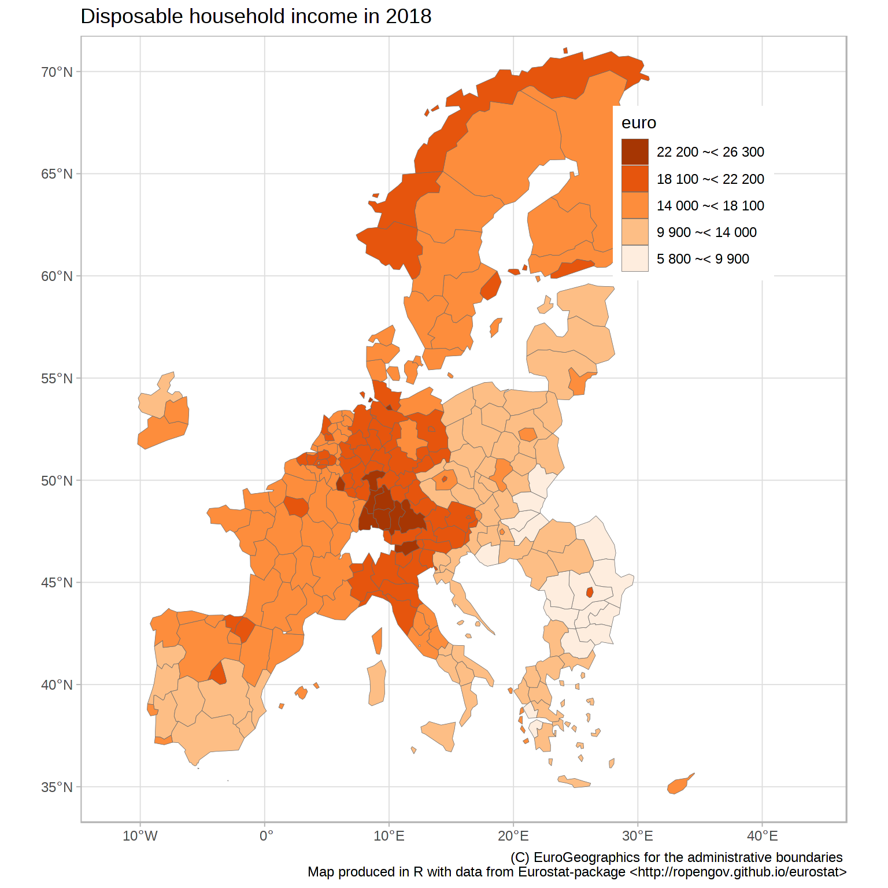

R Tools for Eurostat Open Data: maps
This rOpenGov R package provides tools to access Eurostat database, which you can also browse on-line for the data sets and documentation. For contact information and source code, see the package website.
See eurostat vignette for installation and basic use.
Maps
NOTE: we recommend to check also the giscoR package (https://dieghernan.github.io/giscoR/). This is another API package that provides R tools for Eurostat geographic data to support geospatial analysis and visualization.
Disposable income of private households by NUTS 2 regions at 1:60mln resolution using tmap
The mapping examples below use tmap package.
##
## Attaching package: 'dplyr'## The following objects are masked from 'package:stats':
##
## filter, lag## The following objects are masked from 'package:base':
##
## intersect, setdiff, setequal, union## Linking to GEOS 3.8.0, GDAL 3.0.4, PROJ 6.3.1
library(tmap)
# Download attribute data from Eurostat
sp_data <- eurostat::get_eurostat("tgs00026",
time_format = "raw") %>%
# subset to have only a single row per geo
dplyr::filter(time == 2010, nchar(geo) == 4) %>%
# categorise
dplyr::mutate(income = cut_to_classes(values, n = 5))## Table tgs00026 cached at /tmp/RtmpEXAu7o/eurostat/tgs00026_raw_code_FF.rds
# Download geospatial data from GISCO
geodata <- get_eurostat_geospatial(output_class = "sf",
resolution = "60",
nuts_level = 2,
year = 2013)## No encoding supplied: defaulting to UTF-8.## sf at resolution 1: 60 cached at: /tmp/RtmpEXAu7o/eurostat/sf60220134326.RData## Warning in get_eurostat_geospatial(output_class = "sf", resolution = "60", :
## Default of 'make_valid' for 'output_class="sf"' will be changed in the future
## (see function details).
# merge with attribute data with geodata
map_data <- inner_join(geodata, sp_data)## Joining, by = "geo"Construct the map
# Fix / remove some broken entries for the demo purpose
geodata <- sf::st_make_valid(geodata)
geodata <- geodata[sf::st_is_valid(geodata),]
# Create and plot the map
map1 <- tmap::tm_shape(geodata) +
tmap::tm_fill("lightgrey") +
tmap::tm_shape(map_data) +
tmap::tm_grid() +
tmap::tm_polygons("income",
title = "Disposable household\nincomes in 2010",
palette = "Oranges")
print(map1) 
Interactive maps can be generated as well
Disposable income of private households by NUTS 2 regions in Poland with labels at 1:1mln resolution using tmap
library(eurostat)
library(dplyr)
library(sf)
library(RColorBrewer)
# Downloading and manipulating the tabular data
print("Let us focus on year 2014 and NUTS-3 level")## [1] "Let us focus on year 2014 and NUTS-3 level"
euro_sf2 <- get_eurostat("tgs00026", time_format = "raw",
filter = list(time = "2014")) %>%
# Subset to NUTS-3 level
dplyr::filter(grepl("PL",geo)) %>%
# label the single geo column
mutate(label = paste0(label_eurostat(.)[["geo"]], "\n", values, "€"),
income = cut_to_classes(values))
print("Download geospatial data from GISCO")## [1] "Download geospatial data from GISCO"
geodata <- get_eurostat_geospatial(output_class = "sf", resolution = "60", nuts_level = 2, year = 2013)## Reading cache file /tmp/RtmpEXAu7o/eurostat/sf60220134326.RData## sf at resolution 1: 60 from year 2013 read from cache file: /tmp/RtmpEXAu7o/eurostat/sf60220134326.RData
# Merge with attribute data with geodata
map_data <- inner_join(geodata, euro_sf2)## Joining, by = "geo"
# Fix / remove some broken entries for the demo purpose
geodata <- sf::st_make_valid(geodata)
geodata <- geodata[sf::st_is_valid(geodata),]
# plot map
library(tmap)
map2 <- tm_shape(geodata) +
tm_fill("lightgrey") +
tm_shape(map_data, is.master = TRUE) +
tm_polygons("income", title = "Disposable household incomes in 2014",
palette = "Oranges", border.col = "white") +
tm_text("NUTS_NAME", just = "center") +
tm_scale_bar()
map2
Disposable income of private households by NUTS 2 regions at 1:10mln resolution using spplot
library(sp)
library(eurostat)
library(dplyr)
library(RColorBrewer)
dat <- get_eurostat("tgs00026", time_format = "raw") %>%
# subsetting to year 2014 and NUTS-2 level
dplyr::filter(time == 2014, nchar(geo) == 4) %>%
# classifying the values the variable
dplyr::mutate(cat = cut_to_classes(values))
# Download geospatial data from GISCO
geodata <- get_eurostat_geospatial(output_class = "spdf", resolution = "10", nuts_level = 2, year = 2013)
# merge with attribute data with geodata
geodata@data <- left_join(geodata@data, dat)
# plot map
sp::spplot(obj = geodata, "cat", main = "Disposable household income",
xlim = c(-22,34), ylim = c(35,70),
col.regions = c("dim grey", brewer.pal(n = 5, name = "Oranges")),
col = "white", usePolypath = FALSE)Disposable income of private households by NUTS 2 regions at 1:60mln resolution using ggplot2
Meanwhile the CRAN version of ggplot2 is lacking support for simple features, you can plot maps with ggplot2 by downloading geospatial data as data.frame with output_class argument set as df.
# Disposable income of private households by NUTS 2 regions at 1:60mln res
library(eurostat)
library(dplyr)
library(ggplot2)
data_eurostat <- get_eurostat("tgs00026", time_format = "raw") %>%
dplyr::filter(time == 2018, nchar(geo) == 4) %>%
# classifying the values the variable
dplyr::mutate(cat = cut_to_classes(values))## Reading cache file /tmp/RtmpEXAu7o/eurostat/tgs00026_raw_code_FF.rds## Table tgs00026 read from cache file: /tmp/RtmpEXAu7o/eurostat/tgs00026_raw_code_FF.rds
# Download geospatial data from GISCO
data_geo <- get_eurostat_geospatial(resolution = "60", nuts_level = "2", year = 2021)## No encoding supplied: defaulting to UTF-8.## sf at resolution 1: 60 cached at: /tmp/RtmpEXAu7o/eurostat/sf60220214326.RData## Warning in get_eurostat_geospatial(resolution = "60", nuts_level = "2", :
## Default of 'make_valid' for 'output_class="sf"' will be changed in the future
## (see function details).
# merge with attribute data with geodata
data <- inner_join(data_geo, data_eurostat)## Joining, by = "geo"
## Joining, by = "geo"
ggplot(data = data) + geom_sf(aes(fill = cat), color = "dim grey", size = 0.1) +
scale_fill_brewer(palette = "Oranges") +
guides(fill = guide_legend(reverse = TRUE, title = "euro")) +
labs(title = "Disposable household income in 2018",
caption="(C) EuroGeographics for the administrative boundaries
Map produced in R with data from Eurostat-package <http://ropengov.github.io/eurostat>") +
theme_light() +
theme(legend.position = c(.8, .8)) +
coord_sf(xlim = c(-12, 44), ylim = c(35, 70))
Version info
This tutorial was created with
## R version 4.1.1 (2021-08-10)
## Platform: x86_64-pc-linux-gnu (64-bit)
## Running under: Ubuntu 20.04.3 LTS
##
## Matrix products: default
## BLAS: /usr/lib/x86_64-linux-gnu/blas/libblas.so.3.9.0
## LAPACK: /usr/lib/x86_64-linux-gnu/lapack/liblapack.so.3.9.0
##
## locale:
## [1] LC_CTYPE=C.UTF-8 LC_NUMERIC=C LC_TIME=C.UTF-8
## [4] LC_COLLATE=C.UTF-8 LC_MONETARY=C.UTF-8 LC_MESSAGES=C.UTF-8
## [7] LC_PAPER=C.UTF-8 LC_NAME=C LC_ADDRESS=C
## [10] LC_TELEPHONE=C LC_MEASUREMENT=C.UTF-8 LC_IDENTIFICATION=C
##
## attached base packages:
## [1] stats graphics grDevices utils datasets methods base
##
## other attached packages:
## [1] ggplot2_3.3.5 RColorBrewer_1.1-2 tmap_3.3-2 sf_1.0-2
## [5] dplyr_1.0.7 eurostat_3.7.7
##
## loaded via a namespace (and not attached):
## [1] fs_1.5.0 lubridate_1.7.10 bit64_4.0.5
## [4] httr_1.4.2 rprojroot_2.0.2 tools_4.1.1
## [7] backports_1.2.1 bslib_0.3.0 utf8_1.2.2
## [10] R6_2.5.1 KernSmooth_2.23-20 colorspace_2.0-2
## [13] DBI_1.1.1 raster_3.4-13 withr_2.4.2
## [16] sp_1.4-5 tidyselect_1.1.1 leaflet_2.0.4.1
## [19] bit_4.0.4 curl_4.3.2 compiler_4.1.1
## [22] leafem_0.1.6 textshaping_0.3.5 Cairo_1.5-12.2
## [25] xml2_1.3.2 desc_1.4.0 sass_0.4.0
## [28] scales_1.1.1 classInt_0.4-3 readr_2.0.2
## [31] proxy_0.4-26 pkgdown_1.6.1.9001 systemfonts_1.0.2
## [34] stringr_1.4.0 digest_0.6.28 rmarkdown_2.11
## [37] base64enc_0.1-3 dichromat_2.0-0 pkgconfig_2.0.3
## [40] htmltools_0.5.2 highr_0.9 fastmap_1.1.0
## [43] htmlwidgets_1.5.4 rlang_0.4.11 readxl_1.3.1
## [46] farver_2.1.0 jquerylib_0.1.4 generics_0.1.0
## [49] jsonlite_1.7.2 crosstalk_1.1.1 vroom_1.5.5
## [52] magrittr_2.0.1 s2_1.0.7 munsell_0.5.0
## [55] Rcpp_1.0.7 fansi_0.5.0 abind_1.4-5
## [58] RefManageR_1.3.0 lifecycle_1.0.1 stringi_1.7.4
## [61] leafsync_0.1.0 yaml_2.2.1 tmaptools_3.1-1
## [64] plyr_1.8.6 grid_4.1.1 parallel_4.1.1
## [67] regions_0.1.8 crayon_1.4.1 lattice_0.20-45
## [70] stars_0.5-3 hms_1.1.1 knitr_1.36
## [73] pillar_1.6.3 codetools_0.2-18 wk_0.5.0
## [76] XML_3.99-0.8 glue_1.4.2 evaluate_0.14
## [79] vctrs_0.3.8 png_0.1-7 tzdb_0.1.2
## [82] cellranger_1.1.0 gtable_0.3.0 purrr_0.3.4
## [85] tidyr_1.1.4 assertthat_0.2.1 cachem_1.0.6
## [88] xfun_0.26 mime_0.12 lwgeom_0.2-7
## [91] broom_0.7.9 countrycode_1.3.0 e1071_1.7-9
## [94] ragg_1.1.3 class_7.3-19 viridisLite_0.4.0
## [97] tibble_3.1.4 memoise_2.0.0 units_0.7-2
## [100] ellipsis_0.3.2 here_1.0.1